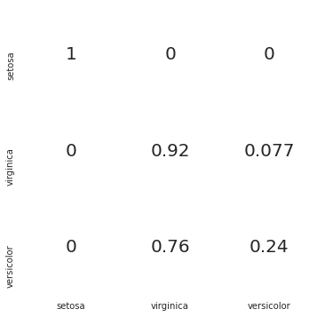

## Upload data from Module 7 data folder:
# data1.csv
# Note, make sure not to upload the data1.csv from Module 2Problem Description
This notebook will classify Iris samples using an artificial neural network constructed using R packagesData
The iris data set contains 150 samples (rows) with five columns
The first four columns contain the independent variables (input data), ie. the flower measurements:
- Sepal length
- Sepal width
- Petal length
- Petal width
The last column contains the output class setosa, versicolor, and virginicaANN Model
The ANN will have four input neurons, one for each feature, a hidden layer of 3 neurons (can be changed), and three output neurons, one for each class
An ANN is created and trained on a random sample of 100 rows and tested on the remaining 50 samples.
When performing the predictions (testing), each output neuron will output a number between 0 and 1, the sum of all predictions is 1
These predictions are then binarized according to the highest prediction:
setosa versicolor virginica
Raw Predictions 0.2 0.2 0.6
Binarized 0 0 1
Predicted Class: virginicaMeasuring Performance
Performance on the test set is quantified using a confusion matrix
https://dev.to/overrideveloper/understanding-the-confusion-matrix-264i
A function is implemented to predict the class of a set of user-entered measurements
Cell 1 Importing libraries
import numpy as np
import pandas as pd
import matplotlib.pyplot as plt
import seaborn as sns
Cell 2 Reading the data
#read data from csv
iris = pd.read_csv("data1.csv")
iris.head()| Sepal_Length | Sepal_Width | Petal_Length | Petal_Width | Species | |
|---|---|---|---|---|---|
| 0 | 5.1 | 3.5 | 1.4 | 0.2 | Iris-setosa |
| 1 | 4.9 | 3.0 | 1.4 | 0.2 | Iris-setosa |
| 2 | 4.7 | 3.2 | 1.3 | 0.2 | Iris-setosa |
| 3 | 4.6 | 3.1 | 1.5 | 0.2 | Iris-setosa |
| 4 | 5.0 | 3.6 | 1.4 | 0.2 | Iris-setosa |
Cell 3 Dataset verification
#Check the dataset to make sure no data is missing and Check the class labels
def verify_dataset(data):
#if any of the rows have missing value return datas missing
data_found = 1
#Iterate over each column
for each_column in data.columns:
#If any column has null values, a message is printed
if data[each_column].isnull().any():
print("Data missing in Column " + each_column)
#if any rows are not missing return Dataset is complete. No missing value
quit()
#If no nulls are found, print the corresponding message
if data_found == 1:
print("Dataset is complete. No missing values")
return
#Running the above function on the iris data set
verify_dataset(iris)Dataset is complete. No missing values#Normalize array
def normalize(X, axis=-1, order=2):
l2 = np.atleast_1d(np.linalg.norm(X, order, axis))
l2[l2 == 0] = 1
return X / np.expand_dims(l2, axis)Cell 4 One hot encoding function
#This function accepts an array of categorical variables and returns the one hot encoding
def to_one_hot(Y):
n_col = np.amax(Y) + 1
binarized = np.zeros((len(Y), n_col))
for i in range(len(Y)):
binarized[i, Y[i]] = 1.
return binarizedCell 5 Selecting features from a list
#Selecting the features that will be used for training and testing
#Changing the values allows the user to see the impact of omitting certain features
'''Change the values below'''
sepal_length = True
sepal_width = True
petal_length = True
petal_width = True
'''Change the values above'''
feature_list = [sepal_length,sepal_width,petal_length,petal_width]Cell 6 Selecting features and running the normalization function
from sklearn import preprocessing
from sklearn.preprocessing import StandardScaler
#Using sklearn to perform normalization
sc = StandardScaler()
#Performing the scaling on the training and test sets
#Specifying the columns that contain the independent variables (inputs)
columns = ['Sepal_Length', 'Sepal_Width', 'Petal_Length', 'Petal_Width']
#Extracting the independent variables from the data set
x = pd.DataFrame(iris, columns=columns)
#print(x[:5])
x = x.to_numpy()
x = x[:,feature_list]
#print( 'feature list')
mean = x[:,0].mean()
print(mean)
print(x[:5])
#print(x[:,0])
#Normalizing the data
x = sc.fit_transform(x)
#print( 'Normalizing the data')
#print(x[2:5])
mean1 = x[:,0].mean()
print(mean1)5.843333333333334
[[5.1 3.5 1.4 0.2]
[4.9 3. 1.4 0.2]
[4.7 3.2 1.3 0.2]
[4.6 3.1 1.5 0.2]
[5. 3.6 1.4 0.2]]
-4.736951571734001e-16Cell 7 Labelling output data and applying one hot encoding
#Creating a dictionary that relates each species to a label (integer)
label_dict = dict()
label_dict['0'] = 'setosa'
label_dict['1'] = 'virginica'
label_dict['2'] = 'versicolor'
#Replacing the species with integers as defined by the dictionary
iris['Species'].replace(['Iris-setosa', 'Iris-virginica', 'Iris-versicolor'], [0, 1, 2], inplace=True)
#Get Output, flatten and encode to one-hot
columns = ['Species']
#Extracting species values from the data set
y = pd.DataFrame(iris, columns=columns)
y = y.to_numpy()
y = y.flatten()
#Performing one hot encoding
y = to_one_hot(y)Cell 8 Train test splitting
#Placing the processed x and y back into a data frame
x_y = pd.DataFrame(np.concatenate((x,y), axis=1))
def split_dataset_test_train(data,train_size):
#Randomizing the data rows
data = data.sample(frac=1).reset_index(drop=True)
#Training data is obtained from the start of the data set to the 'train_size'
training_data = data.iloc[:int(train_size * len(data))].reset_index(drop=True)
#Test data is obtained from the end of the 'train_size' to the end of the data set
testing_data = data.iloc[int(train_size * len(data)):].reset_index(drop=True)
#Returning training and test data
return [training_data, testing_data]
#Running the function above on the x_y data with train size 0.7, ie. 70% of data used for training
train_test_data = split_dataset_test_train(x_y,0.7)
#Getting training and test X data
X_train = train_test_data[0].iloc[:,0:4].to_numpy()
X_test = train_test_data[1].iloc[:,0:4].to_numpy()
#Getting training and test Y data
y_train = train_test_data[0].iloc[:,-3:].to_numpy()
y_test = train_test_data[1].iloc[:,-3:].to_numpy()Cell 9 Importing the Keras libraries, creating the model framework, and adding input and hidden layer
from tensorflow.python.keras.layers import Dense
from tensorflow.python.keras import Sequential
#Creating the framework of the model
classifier = Sequential()
#The first .add() creates both the input layer (size 4) and hidden layer (size 6)
classifier.add(Dense(units = 6, kernel_initializer='random_uniform', activation = 'relu', input_dim = 4) )
#classifier.add(Dense(units = 6, kernel_initializer='random_uniform', activation = 'relu') )Cell 10 Adding the output layer
classifier.add(Dense(units = 3, kernel_initializer='random_uniform', activation = 'sigmoid'))Cell 11 Compiling the model
classifier.compile(optimizer = 'adam', loss = 'categorical_crossentropy', metrics = ['accuracy'])Cell 12 Training the model on the training data
classifier.fit(X_train, y_train, epochs = 100)Epoch 1/100
4/4 [==============================] - 1s 3ms/step - loss: 1.0988 - accuracy: 0.4190
Epoch 2/100
4/4 [==============================] - 0s 2ms/step - loss: 1.0973 - accuracy: 0.6095
Epoch 3/100
4/4 [==============================] - 0s 2ms/step - loss: 1.0958 - accuracy: 0.6952
Epoch 4/100
4/4 [==============================] - 0s 3ms/step - loss: 1.0941 - accuracy: 0.8190
Epoch 5/100
4/4 [==============================] - 0s 4ms/step - loss: 1.0922 - accuracy: 0.7905
Epoch 6/100
4/4 [==============================] - 0s 2ms/step - loss: 1.0903 - accuracy: 0.7619
Epoch 7/100
4/4 [==============================] - 0s 3ms/step - loss: 1.0880 - accuracy: 0.7238
Epoch 8/100
4/4 [==============================] - 0s 3ms/step - loss: 1.0854 - accuracy: 0.7333
Epoch 9/100
4/4 [==============================] - 0s 4ms/step - loss: 1.0825 - accuracy: 0.7143
Epoch 10/100
4/4 [==============================] - 0s 3ms/step - loss: 1.0793 - accuracy: 0.6952
Epoch 11/100
4/4 [==============================] - 0s 3ms/step - loss: 1.0754 - accuracy: 0.6857
Epoch 12/100
4/4 [==============================] - 0s 5ms/step - loss: 1.0711 - accuracy: 0.6857
Epoch 13/100
4/4 [==============================] - 0s 3ms/step - loss: 1.0663 - accuracy: 0.6857
Epoch 14/100
4/4 [==============================] - 0s 4ms/step - loss: 1.0612 - accuracy: 0.6857
Epoch 15/100
4/4 [==============================] - 0s 4ms/step - loss: 1.0554 - accuracy: 0.6857
Epoch 16/100
4/4 [==============================] - 0s 3ms/step - loss: 1.0490 - accuracy: 0.6857
Epoch 17/100
4/4 [==============================] - 0s 5ms/step - loss: 1.0423 - accuracy: 0.6857
Epoch 18/100
4/4 [==============================] - 0s 2ms/step - loss: 1.0351 - accuracy: 0.6857
Epoch 19/100
4/4 [==============================] - 0s 2ms/step - loss: 1.0269 - accuracy: 0.6857
Epoch 20/100
4/4 [==============================] - 0s 3ms/step - loss: 1.0188 - accuracy: 0.6857
Epoch 21/100
4/4 [==============================] - 0s 2ms/step - loss: 1.0100 - accuracy: 0.6857
Epoch 22/100
4/4 [==============================] - 0s 2ms/step - loss: 1.0006 - accuracy: 0.6857
Epoch 23/100
4/4 [==============================] - 0s 3ms/step - loss: 0.9907 - accuracy: 0.6857
Epoch 24/100
4/4 [==============================] - 0s 3ms/step - loss: 0.9809 - accuracy: 0.6857
Epoch 25/100
4/4 [==============================] - 0s 2ms/step - loss: 0.9698 - accuracy: 0.6857
Epoch 26/100
4/4 [==============================] - 0s 2ms/step - loss: 0.9589 - accuracy: 0.6857
Epoch 27/100
4/4 [==============================] - 0s 3ms/step - loss: 0.9476 - accuracy: 0.6857
Epoch 28/100
4/4 [==============================] - 0s 3ms/step - loss: 0.9358 - accuracy: 0.6857
Epoch 29/100
4/4 [==============================] - 0s 3ms/step - loss: 0.9241 - accuracy: 0.6857
Epoch 30/100
4/4 [==============================] - 0s 3ms/step - loss: 0.9116 - accuracy: 0.6857
Epoch 31/100
4/4 [==============================] - 0s 4ms/step - loss: 0.8995 - accuracy: 0.6857
Epoch 32/100
4/4 [==============================] - 0s 3ms/step - loss: 0.8871 - accuracy: 0.6857
Epoch 33/100
4/4 [==============================] - 0s 4ms/step - loss: 0.8742 - accuracy: 0.6857
Epoch 34/100
4/4 [==============================] - 0s 3ms/step - loss: 0.8616 - accuracy: 0.6857
Epoch 35/100
4/4 [==============================] - 0s 4ms/step - loss: 0.8488 - accuracy: 0.6857
Epoch 36/100
4/4 [==============================] - 0s 4ms/step - loss: 0.8363 - accuracy: 0.6857
Epoch 37/100
4/4 [==============================] - 0s 4ms/step - loss: 0.8235 - accuracy: 0.6857
Epoch 38/100
4/4 [==============================] - 0s 3ms/step - loss: 0.8110 - accuracy: 0.6857
Epoch 39/100
4/4 [==============================] - 0s 4ms/step - loss: 0.7985 - accuracy: 0.6857
Epoch 40/100
4/4 [==============================] - 0s 3ms/step - loss: 0.7862 - accuracy: 0.6857
Epoch 41/100
4/4 [==============================] - 0s 3ms/step - loss: 0.7733 - accuracy: 0.6857
Epoch 42/100
4/4 [==============================] - 0s 2ms/step - loss: 0.7612 - accuracy: 0.6857
Epoch 43/100
4/4 [==============================] - 0s 3ms/step - loss: 0.7492 - accuracy: 0.6857
Epoch 44/100
4/4 [==============================] - 0s 3ms/step - loss: 0.7368 - accuracy: 0.6857
Epoch 45/100
4/4 [==============================] - 0s 4ms/step - loss: 0.7250 - accuracy: 0.6857
Epoch 46/100
4/4 [==============================] - 0s 4ms/step - loss: 0.7130 - accuracy: 0.6857
Epoch 47/100
4/4 [==============================] - 0s 3ms/step - loss: 0.7023 - accuracy: 0.6857
Epoch 48/100
4/4 [==============================] - 0s 3ms/step - loss: 0.6908 - accuracy: 0.6857
Epoch 49/100
4/4 [==============================] - 0s 3ms/step - loss: 0.6802 - accuracy: 0.6857
Epoch 50/100
4/4 [==============================] - 0s 3ms/step - loss: 0.6698 - accuracy: 0.6857
Epoch 51/100
4/4 [==============================] - 0s 3ms/step - loss: 0.6598 - accuracy: 0.6857
Epoch 52/100
4/4 [==============================] - 0s 3ms/step - loss: 0.6500 - accuracy: 0.6857
Epoch 53/100
4/4 [==============================] - 0s 3ms/step - loss: 0.6405 - accuracy: 0.6857
Epoch 54/100
4/4 [==============================] - 0s 3ms/step - loss: 0.6312 - accuracy: 0.6857
Epoch 55/100
4/4 [==============================] - 0s 4ms/step - loss: 0.6225 - accuracy: 0.6857
Epoch 56/100
4/4 [==============================] - 0s 2ms/step - loss: 0.6139 - accuracy: 0.6857
Epoch 57/100
4/4 [==============================] - 0s 2ms/step - loss: 0.6059 - accuracy: 0.6857
Epoch 58/100
4/4 [==============================] - 0s 2ms/step - loss: 0.5979 - accuracy: 0.6857
Epoch 59/100
4/4 [==============================] - 0s 3ms/step - loss: 0.5904 - accuracy: 0.6857
Epoch 60/100
4/4 [==============================] - 0s 2ms/step - loss: 0.5833 - accuracy: 0.6857
Epoch 61/100
4/4 [==============================] - 0s 3ms/step - loss: 0.5764 - accuracy: 0.6857
Epoch 62/100
4/4 [==============================] - 0s 2ms/step - loss: 0.5698 - accuracy: 0.6857
Epoch 63/100
4/4 [==============================] - 0s 2ms/step - loss: 0.5635 - accuracy: 0.6952
Epoch 64/100
4/4 [==============================] - 0s 3ms/step - loss: 0.5572 - accuracy: 0.6952
Epoch 65/100
4/4 [==============================] - 0s 2ms/step - loss: 0.5514 - accuracy: 0.6952
Epoch 66/100
4/4 [==============================] - 0s 2ms/step - loss: 0.5454 - accuracy: 0.6952
Epoch 67/100
4/4 [==============================] - 0s 2ms/step - loss: 0.5399 - accuracy: 0.6952
Epoch 68/100
4/4 [==============================] - 0s 3ms/step - loss: 0.5347 - accuracy: 0.7048
Epoch 69/100
4/4 [==============================] - 0s 2ms/step - loss: 0.5293 - accuracy: 0.7048
Epoch 70/100
4/4 [==============================] - 0s 2ms/step - loss: 0.5243 - accuracy: 0.7143
Epoch 71/100
4/4 [==============================] - 0s 2ms/step - loss: 0.5193 - accuracy: 0.7143
Epoch 72/100
4/4 [==============================] - 0s 3ms/step - loss: 0.5149 - accuracy: 0.7143
Epoch 73/100
4/4 [==============================] - 0s 3ms/step - loss: 0.5103 - accuracy: 0.7143
Epoch 74/100
4/4 [==============================] - 0s 2ms/step - loss: 0.5059 - accuracy: 0.7238
Epoch 75/100
4/4 [==============================] - 0s 3ms/step - loss: 0.5016 - accuracy: 0.7238
Epoch 76/100
4/4 [==============================] - 0s 3ms/step - loss: 0.4974 - accuracy: 0.7333
Epoch 77/100
4/4 [==============================] - 0s 4ms/step - loss: 0.4933 - accuracy: 0.7524
Epoch 78/100
4/4 [==============================] - 0s 2ms/step - loss: 0.4894 - accuracy: 0.7524
Epoch 79/100
4/4 [==============================] - 0s 3ms/step - loss: 0.4855 - accuracy: 0.7524
Epoch 80/100
4/4 [==============================] - 0s 3ms/step - loss: 0.4818 - accuracy: 0.7619
Epoch 81/100
4/4 [==============================] - 0s 2ms/step - loss: 0.4782 - accuracy: 0.7714
Epoch 82/100
4/4 [==============================] - 0s 3ms/step - loss: 0.4746 - accuracy: 0.7714
Epoch 83/100
4/4 [==============================] - 0s 3ms/step - loss: 0.4715 - accuracy: 0.7810
Epoch 84/100
4/4 [==============================] - 0s 3ms/step - loss: 0.4679 - accuracy: 0.7905
Epoch 85/100
4/4 [==============================] - 0s 8ms/step - loss: 0.4646 - accuracy: 0.7905
Epoch 86/100
4/4 [==============================] - 0s 3ms/step - loss: 0.4615 - accuracy: 0.8000
Epoch 87/100
4/4 [==============================] - 0s 3ms/step - loss: 0.4582 - accuracy: 0.8095
Epoch 88/100
4/4 [==============================] - 0s 3ms/step - loss: 0.4553 - accuracy: 0.8095
Epoch 89/100
4/4 [==============================] - 0s 4ms/step - loss: 0.4522 - accuracy: 0.8190
Epoch 90/100
4/4 [==============================] - 0s 3ms/step - loss: 0.4492 - accuracy: 0.8190
Epoch 91/100
4/4 [==============================] - 0s 3ms/step - loss: 0.4464 - accuracy: 0.8190
Epoch 92/100
4/4 [==============================] - 0s 3ms/step - loss: 0.4437 - accuracy: 0.8190
Epoch 93/100
4/4 [==============================] - 0s 5ms/step - loss: 0.4409 - accuracy: 0.8190
Epoch 94/100
4/4 [==============================] - 0s 2ms/step - loss: 0.4383 - accuracy: 0.8190
Epoch 95/100
4/4 [==============================] - 0s 3ms/step - loss: 0.4357 - accuracy: 0.8381
Epoch 96/100
4/4 [==============================] - 0s 2ms/step - loss: 0.4332 - accuracy: 0.8381
Epoch 97/100
4/4 [==============================] - 0s 2ms/step - loss: 0.4306 - accuracy: 0.8381
Epoch 98/100
4/4 [==============================] - 0s 2ms/step - loss: 0.4282 - accuracy: 0.8476
Epoch 99/100
4/4 [==============================] - 0s 3ms/step - loss: 0.4256 - accuracy: 0.8476
Epoch 100/100
4/4 [==============================] - 0s 5ms/step - loss: 0.4233 - accuracy: 0.8476<tensorflow.python.keras.callbacks.History at 0x7fa363956c10>Cell 13 Training the model on the training data
#Predicting flower species using the test set
y_pred = classifier.predict(X_test)Cell 14 Training the model on the training data
from sklearn.metrics import confusion_matrix
import seaborn as sns
#Creating the normalized confusion matrix
cm = confusion_matrix(y_test.argmax(axis=1), y_pred.argmax(axis=1),normalize='true')
from matplotlib.colors import ListedColormap
df_cm = pd.DataFrame(cm, index = ['setosa','virginica','versicolor'],
columns = ['setosa','virginica','versicolor'])
plt.figure(figsize = (6,6))
with sns.axes_style('white'):
sns.heatmap(df_cm,
cbar=False,
square=False,
annot=True,
annot_kws={"size": 20},
cmap=ListedColormap(['white']),
linewidths=0.5)
sns.set(font_scale=1.8)
def input_test_seq():
sepal_length = float(input('Enter the Sepal length in cm : '))
while True:
if float(sepal_length)< 0 or float(sepal_length) > 10:
print('Inalid Entry. Enter Sepal Length <10 \n')
sepal_length = float(input('Enter the sepal length in cm :'))
continue
else:
break
sepal_width = float(input('Enter the Sepal width in cm :'))
while True:
if float(sepal_width) < 0 or float(sepal_width) > 10:
print('Invalid entry')
sepal_width = float(input('Enter the sepal width in cm :'))
continue
else:
break
petal_length = float(input('Enter the petal length in cm :'))
while True:
if float(petal_length) <0 or float(petal_length) > 10:
print('Inalid Entry. Please enter value less than 10')
petal_length = float(input('Enter the petal length in cm :'))
continue
else:
break
petal_width = float(input('Enter the petal width in cm :'))
while True:
if float(petal_width) < 0 or float(petal_width) > 10:
print('Invalid entry')
petal_width = float(input('Enter the petal width in cm :'))
continue
else:
break
'''
result_category = predict(
{'sepal_length': sepal_length, 'sepal_width': sepal_width,
'petal_length': petal_length, 'petal_width': petal_width}, tree, 1.0)
'''
predict_features = [sepal_length,sepal_width,petal_length,petal_width]
predict_features = normalize(predict_features)
result_category = classifier.predict(predict_features)
result_category = result_category.argmax(axis=1)[0]
if result_category == 0:
value_prediction = "Iris-setosa"
elif result_category == 1:
value_prediction = "Iris-versicolor"
elif result_category == 2:
value_prediction = "Iris-virginica"
return value_prediction
flower_prediction = input_test_seq()
print("The flower is most likely", flower_prediction)Enter the Sepal length in cm : 5.1
Enter the Sepal width in cm :3.4
Enter the petal length in cm :1.4
Enter the petal width in cm :0.2'Iris-versicolor'